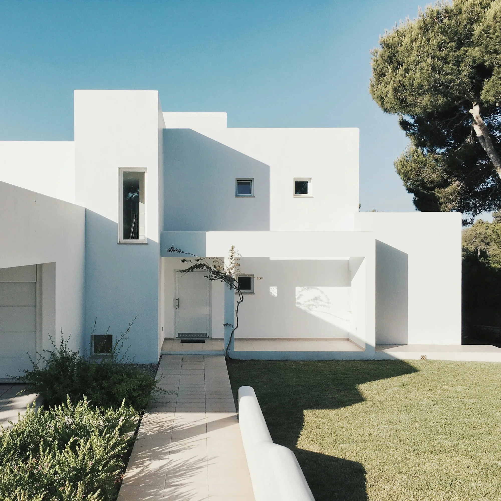

Горизонтальные линии, открытые террасы и неспешный ритм жизни за городом.
Архитектура и дизайн интерьеровНезависимый взгляд. Вне времени.
АРХИТЕКТУРА
ПРОСТРАНСТВА
Создаём пространства, в которых
форма обретает смысл.

Ничего лишнего.Визуальное исследование / 01
FORMA — пространство начинается с идеиКонцептуальная студия / NOVARY
01 /О студии
Мы верим, что хорошая
архитектура начинается
с внимания к человеку.
К тому, как он живёт. Что замечает утром.
Где находит тишину в конце дня.
FORMA — концептуальная архитектурная студия на пересечении рационального и чувственного. Мы исследуем, как свет, пропорции и натуральные материалы меняют ощущение пространства.
Каждый проект — диалог с местом и будущим образом жизни. Простые решения, точные детали и свобода дышать.
Наш подход01 — Человек02 — Контекст03 — Материал
02 /Избранные проекты
Форма жизни(04)
Четыре истории о пространстве.
Четыре способа почувствовать главное.
Все проекты — авторские демонстрационные концепты. Фотографии — визуальные референсы, а не реализованные работы FORMA.
Выразительность простого объёма. Дом как место, где можно сосредоточиться на своём.
Нейтральная архитектура для ярких идей. Гибкое пространство для искусства и встреч.
Тактильность дерева, мягкий свет и спокойная палитра. Личный мир, свободный от суеты.
Архитектура — это искусство замечать.Начать свою историю
03 /Экспертиза
От первой линии
до последней детали.
Смотрим на проект целиком.
И уделяем внимание каждой его части.
01Архитектурное
проектирование
проектирование
Проектируем частные дома и резиденции в диалоге с ландшафтом. Продумываем посадку на участке, объёмы, планировки и конструктивную логику.
Концепция / Эскиз / Рабочий проект02Дизайн интерьеров
Создаём цельную среду для повседневной жизни: от сценариев и планировок до освещения, материалов и предметов. Тактильную, удобную и личную.
Планировка / Материалы / Свет03Коммерческие
пространства
пространства
Переводим характер бренда на язык пространства. Исследуем путь посетителя и создаём выразительную среду для работы, встреч и новых впечатлений.
Стратегия / Пространство / Опыт04Авторское
сопровождение
сопровождение
Помогаем сохранить идею на каждом этапе реализации. Сверяем решения с проектом, обсуждаем детали с подрядчиками и подбираем материалы.
Детали / Координация / Комплектация04 /Как мы работаем
Ясный процесс.
Цельный результат.
Доверие возникает там,
где понятен каждый следующий шаг.
- 01
Знакомство
и анализСлушаем, задаём вопросы, изучаем контекст. Формулируем задачу и находим то, что важно именно вам.
- 02
Концепция
Ищем образ будущего пространства. Соединяем планировки, объёмы, свет и материалы в единую идею.
- 03
Проектирование
Превращаем идею в точные решения. Прорабатываем детали и готовим документацию для реализации.
- 04
Реализация
Сопровождаем воплощение проекта. В диалоге с командой сохраняем замысел и внимание к деталям.
05 /Новый диалог
У каждой идеи есть своё пространствоДАВАЙТЕ СОЗДАДИМ
ЧТО-ТО ЗНАЧИМОЕ.
Всё начинается с разговора.
О месте, о жизни, о вашей идее.
Демонстрационные контакты.
Адрес не принимает письма.
Концепт студии / для портфолио NOVARY